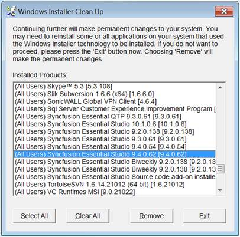

Sometimes installation may crash due to machine got switched off while installation or any other reason. In such case, uninstall utility will not be available. The following are the steps to uninstall the setup manually:
1. Download and install the Windows Installer cleanup utility from the following download link:
2. Remove the Syncfusion product related installers (version you are trying to uninstall) using the Windows Installer Cleanup utility.

Figure 159: Windows Installer Cleanup
3. Manually remove or delete the Syncfusion installed files from the following location (if exists).
Source (Windows XP, Windows Vista, Windows 7):
{Installed location}\ Syncfusion\Essential Studio\ {version}
Example: C:\Program Files\Syncfusion\Essential Studio\9.4.0.62
Samples (Windows XP):
C:\Syncfusion\{version}
C:\Syncfusion\9.4.0.62
Samples (Windows Vista, Windows 7):
C:\Users\{user name}\AppData\Local\Syncfusion\EssentialStudio\ {version}
Example: C:\Users\{user name}\AppData\Local\Syncfusion\EssentialStudio\9.4.0.62
 Note: Samples Location above mentioned is default
for corresponding OS. If you are installed samples in any other location, Please
remove it from that location.
Note: Samples Location above mentioned is default
for corresponding OS. If you are installed samples in any other location, Please
remove it from that location.
The setup will be uninstalled. You can install it again.